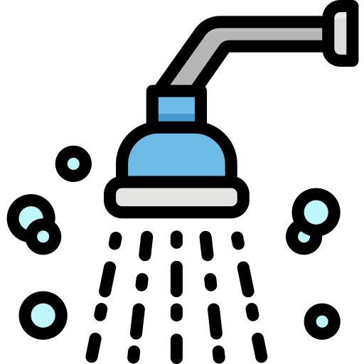
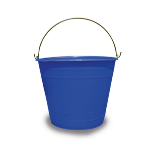
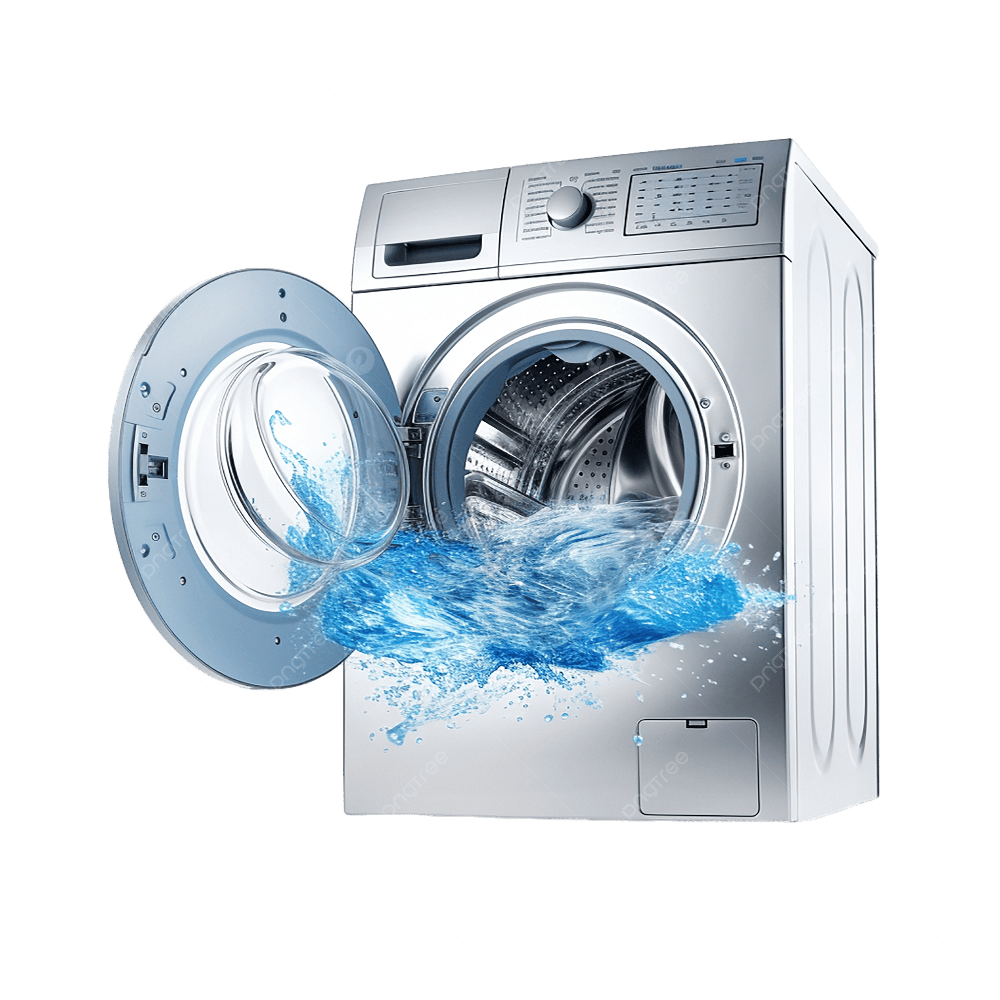
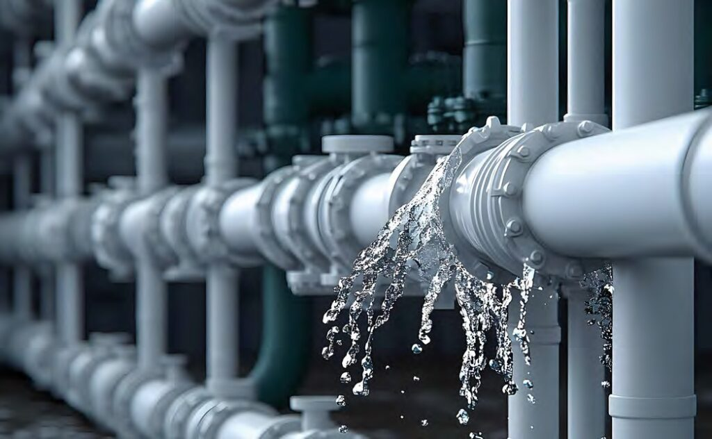
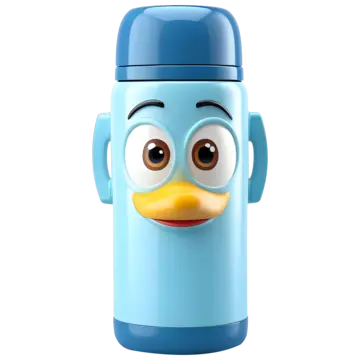
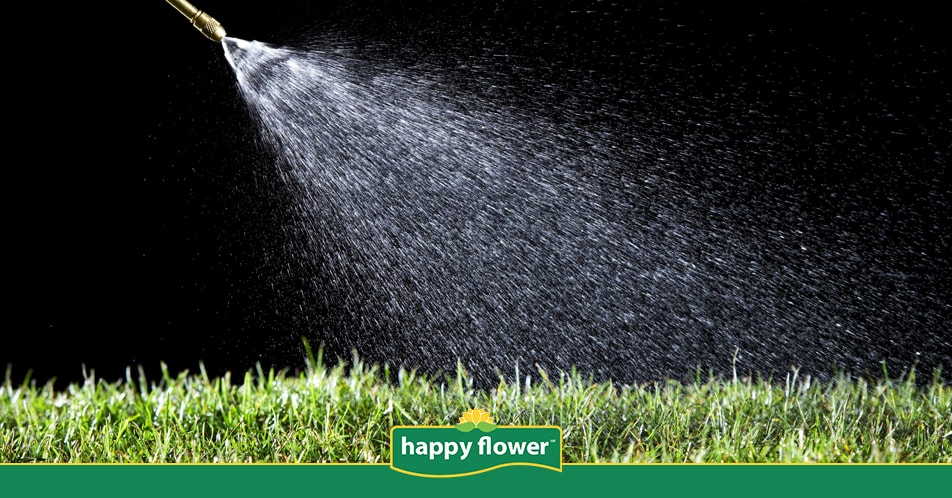

Tips Directos
Consejos prácticos de ahorro
Acciones sencillas para tu día a día en casa y en la escuela.

Ahorro: 40-60 L/díaDuchas de 5 minutos con playlist
Pon una canción de 5 minutos. Báñate antes de que termine, evita tirar decenas de litros de agua.
Dificultad: Fácil
Guardar

Ahorro: 10 L/duchaCubeta para agua fría
Mientras sale la caliente en la ducha, pon una cubeta debajo. Úsala para el inodoro o para regar plantas.
Dificultad: Muy fácil
Guardar

Ahorro: 60 L/cicloAgua de lavadora para limpieza
Recoge el agua del último ciclo de enjuague de la lavadora para lavar el patio o trapear.
Dificultad: Media
Guardar

Ahorro: 50 L/díaReporta fugas en la escuela
Un inodoro con goteo constante tira agua sin parar. Avisa a mantenimiento de tu escuela de inmediato.
Dificultad: Fácil
Guardar

Ahorro: 5 L/díaLleva tu termo recargable
Lleva tu propia botella de agua a la escuela y evita tirar los sobrantes de vasos desechables.
Dificultad: Muy fácil
Guardar

Ahorro: 25 L/riegoRiego al anochecer
Riega las plantas cuando baje el sol para evitar que el calor evapore el agua al instante.
Dificultad: Fácil
Guardar